OCI Network Firewallは2022年7月にリリースされた、パロアルトネットワークスの次世代ファイアウォール技術を基に構築されたOCIクラウドネイティブのマネージド・ファイアウォール・サービスです。
主な機能として、URLフィルタリングやTLS/SSL検査などを提供します。
本チュートリアルではOCI Network Firewallが動作するための環境を構築し、簡単なテストにて動作を確認します。
所要時間 :
- 約70分
前提条件 :
- ユーザーに必要なIAMポリシーが割り当てられていること。ポリシーの詳細はドキュメントを参照ください。
注意 :
- 本チュートリアル内の画面ショットは、OCIのコンソール画面と異なる場合があります。
0. はじめに
・実施内容
以下が本チュートリアルで作成するNetwork Firewallの構成図です。 OCI環境を出入りする通信はNetwork Firewallを経由し、監視および検査が行われます。
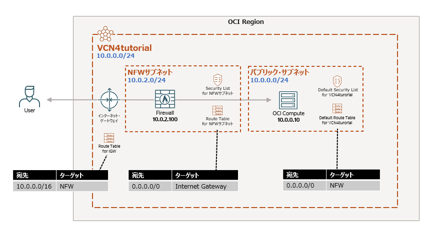
本チュートリアルでは動作テストのためにOCI内にWEBサーバーを準備した後ウィルステストファイルを配置し、外部からの通信がNetwork Firewallによってブロックされることを確認するところまでを行います。
・Network Firewallの概要
Network Firewallは次世代ファイアウォールとして、TLSトラフィックも含め、通過するすべてのリクエストを検査し、ユーザーが構成したファイアウォール・ポリシー・ルールに基づいて、許可、拒否、ドロップ、侵入検出、防止などのアクションを実行します。 より詳細な情報はこちらをご参照ください
主なユースケース
- Palo Alto Networksの脅威シグネチャおよび脅威分析エンジンを活用し、脆弱性攻撃やマルウェア、C&Cサーバーなどの脅威を検知・防御。
- 不正なアウトバウンド通信を識別し、機密データの流出を抑止。
・ルーティングについて
インターネット経由でパブリックサブネット内のインスタンスに到達する通信は、インターネットゲートウェイのルート表に基づき、NFWサブネット内のNetwork Firewallを通過します。その後、検査済みトラフィックがパブリックサブネット内のインスタンスに転送されます。
パブリックサブネット内のインスタンスから発生する通信も、ルート表の設定によりNetwork Firewallを通過します。検査済みの通信は、NFWサブネットのルート表ルールを基にインターネットゲートウェイを介して外部へ送信されます。
1. ネットワークの構築
1-1. VCNの作成
OCIコンソール画面にアクセスし、左上の [メニューボタン] → [ネットワーキング] → [仮想クラウド・ネットワーク] と移動します。
[VCNウィザードの起動] を選択します。
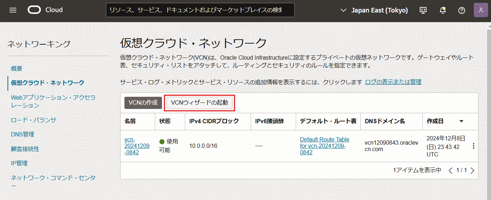
「インターネット接続性を持つVCNの作成」を選択。
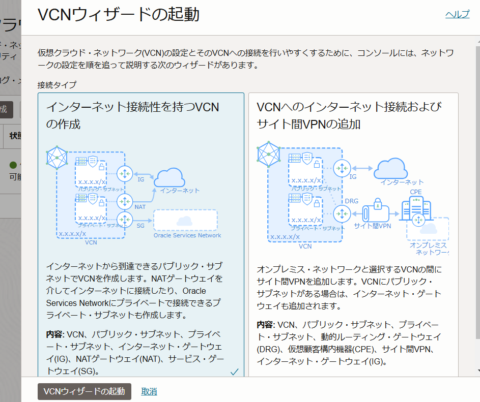
VCN作成画面にて以下項目を入力し、[次] をクリックします。
VCN名- VCN4tutorialコンパートメント- <VCNを作成するコンパートメントを選択>VCN IPv4 CIDRブロック- 10.0.0.0/16
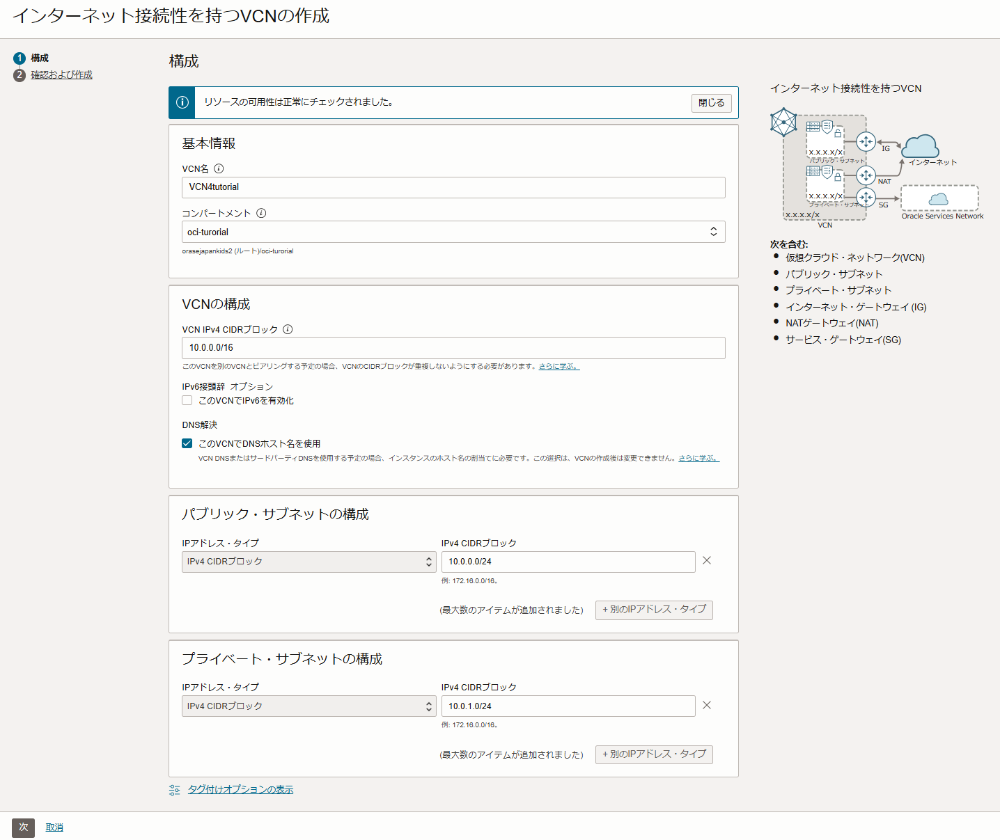
作成されるリソースを確認し、[作成] をクリックすると以下の環境でVCNが作成されます。
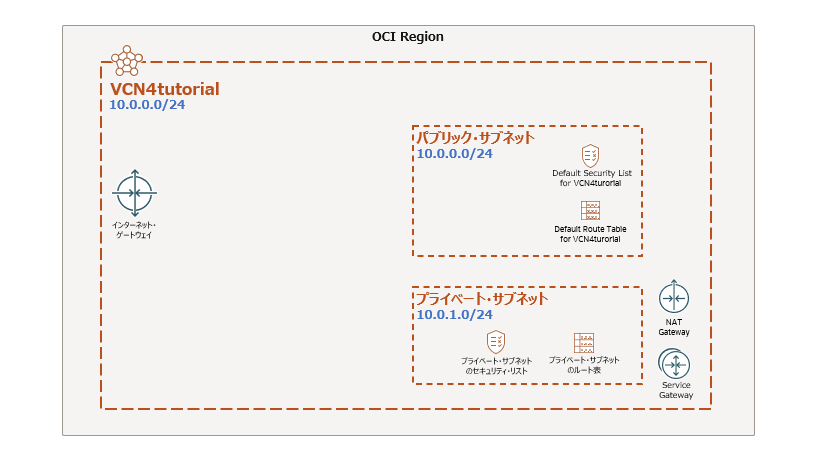
今回はプライベート・サブネット、サービス・ゲートウェイ、NATゲートウェイを使用しません。そのため、後続の構成図ではこれらのリソースを省略しています。
1-2. Network Firewall用サブネットの作成
Network Firewallを配置するためのサブネットを作成します。 サブネット作成前に、必要となるルート表とセキュリティ・リストを準備します。
・ルート表の作成
作成したVCN詳細画面の「ルート表」セクションより [ルート表の作成] ボタンをクリックします。
ルート表作成画面にて以下項目を入力し、[作成] をクリックします。
名前- Route Table for NFWサブネットコンパートメント- <任意のコンパートメントを選択>[＋別のルート・ルール]を選択ターゲット・タイプ- インターネット・ゲートウェイ宛先CIDRブロック- 0.0.0.0/0ターゲット・インターネット・ゲートウェイ- インターネット・ゲートウェイ-VCN4tutorial
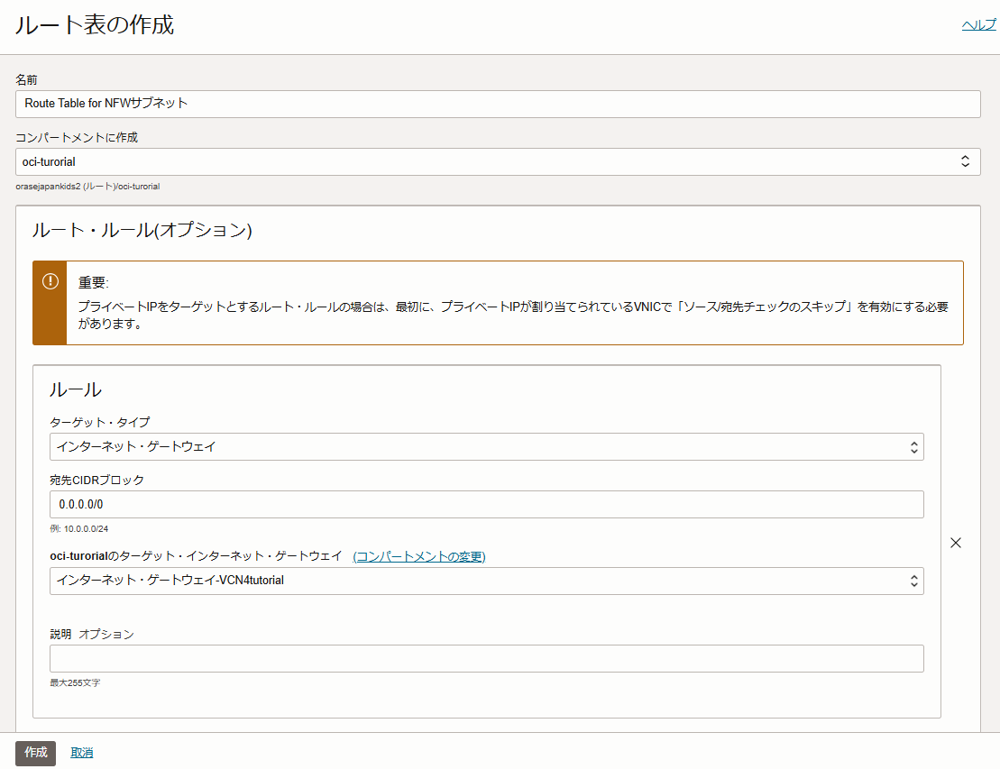
・セキュリティ・リストの作成
作成したVCN詳細画面の「セキュリティ・リスト」セクションより [セキュリティ・リストの作成] ボタンを選択します。 セキュリティ・リスト作成画面にて以下項目を入力し、[セキュリティ・リストの作成] をクリックします。
名前- Security List for NFWサブネット-
コンパートメント- <任意のコンパートメントを選択> [＋別のイングレス・ルール]を選択ソース・タイプ- CIDRソースCIDR- 0.0.0.0/0IPプロトコル- TCP宛先ポート範囲- 80説明- (任意) HTTP通信を許可
[＋別のイングレス・ルール]を選択ソース・タイプ- CIDRソースCIDR- 0.0.0.0/0IPプロトコル- TCP宛先ポート範囲- 22説明- (任意) SSH接続を許可
[＋別のエグレス・ルール]を選択ソース・タイプ- CIDRソースCIDR- 0.0.0.0/0IPプロトコル- すべてのプロトコル説明- (任意) 任意のアウトバウンド通信を許可
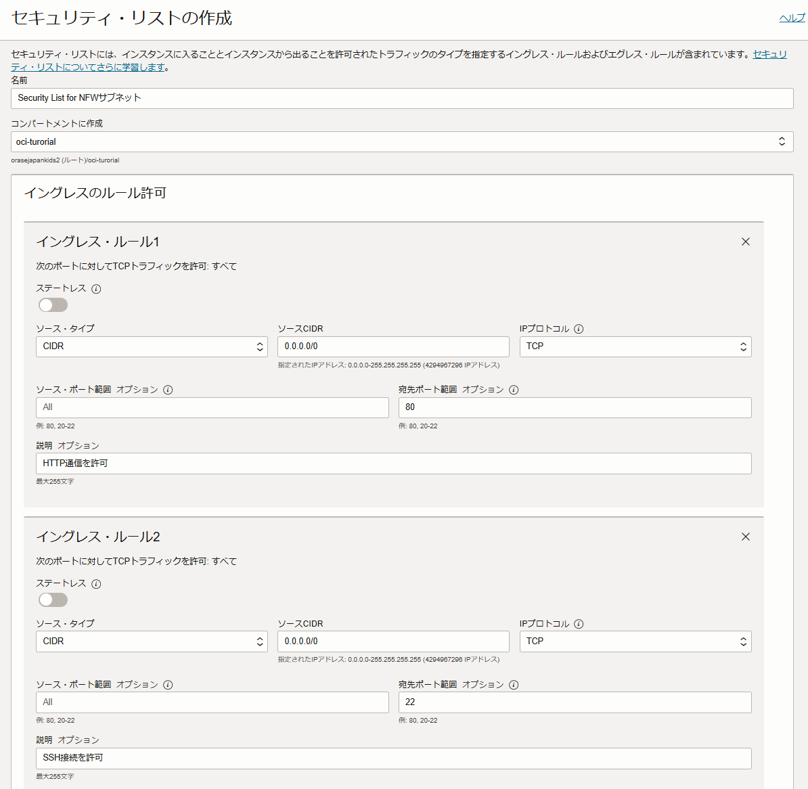 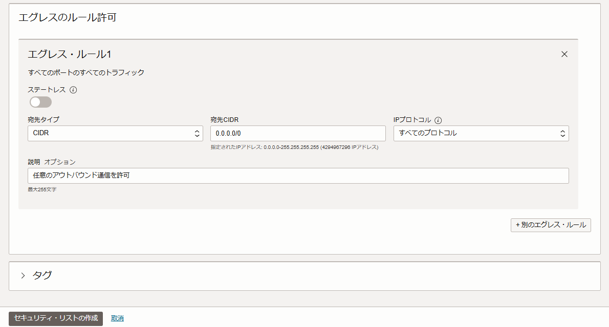
・サブネットの作成
作成したVCN詳細画面の「サブネット」セクションより [サブネットの作成] ボタンを選択します。 サブネット作成画面にて以下項目を入力し、[サブネットの作成] をクリックします。
名前- NFWサブネットサブネット・タイプ- リージョナルIPv4 CIDR Block- 10.0.2.0/24ルート表- Route Table for NFWサブネットサブネット・アクセス- パブリック・サブネットセキュリティ・リスト- Security List for NFWサブネット
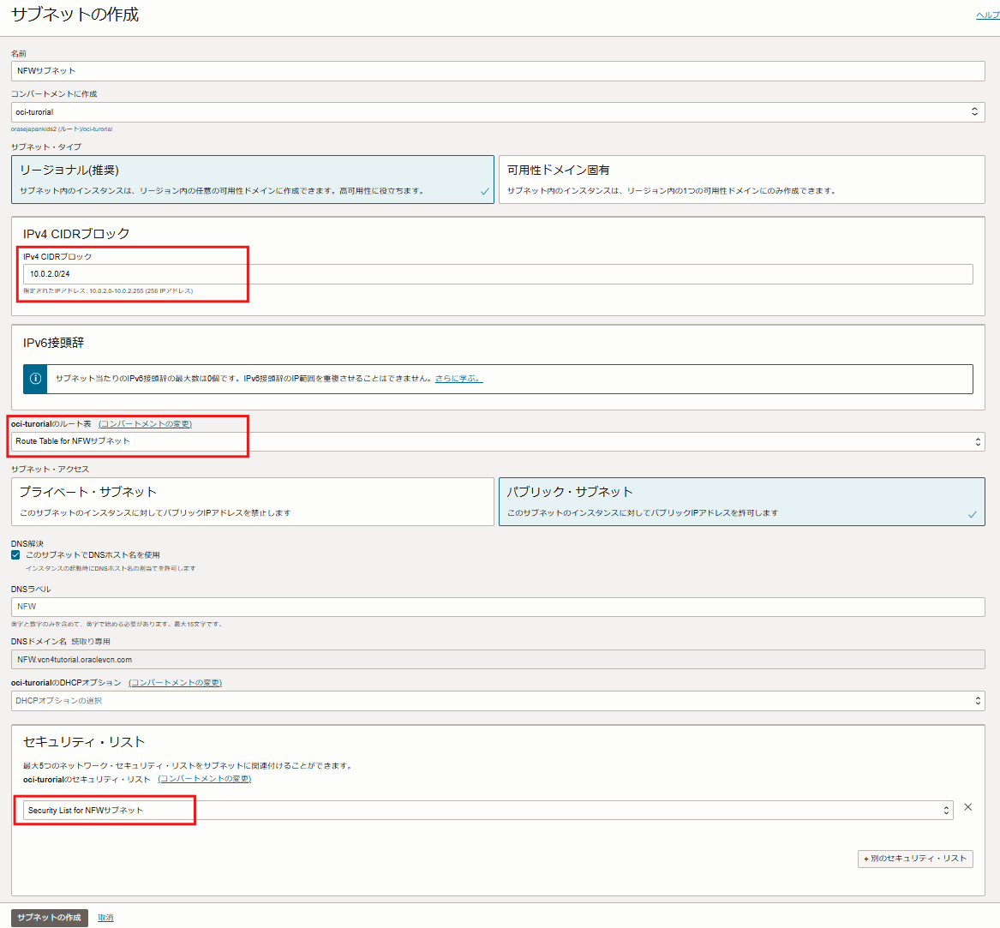
ここまでで以下の構成が整いました。

2. Network Firewallの作成
2-1. ネットワーク・ファイアウォール・ポリシーの作成
Network Firewallインスタンスを作成する際、ネットワーク・トラフィックを制御するルールをまとめたポリシー、ネットワーク・ファイアウォール・ポリシーを指定する必要があります。そのため事前に以下の手順でポリシーを作成します。
OCIコンソール画面左上のメニューボタンより、[アイデンティティとセキュリティ] → [ファイアウォール] → [ネットワーク・ファイアウォール・ポリシー] と移動、[ネットワーク・ファイアウォール・ポリシーの作成] をクリックします。
表示された作成画面にて以下の項目を入力し、[作成] ボタンをクリックします。
名前- nfw_pol_tutorialコンパートメント- <任意のコンパートメントを選択>

2-2. ネットワーク・ファイアウォール・ポリシーの設定
デフォルトではすべての通信は拒否されますので、以下の手順ですべての通信を許可しつつ、疑わしい通信をブロックするルールを設定します。
ポリシー詳細画面の「セキュリティ・ルール」セクションで、[セキュリティ・ルールの作成] ボタンをクリックします。 作成画面にて以下項目を入力し、セキュリティ・ルールを作成します。
-
名前- idp ソース・アドレス- 任意のアドレス宛先アドレス- 任意のアドレスアプリケーション- 任意のアプリケーションサービス- 任意のサービス-
URL- 任意のURL ルール・アクション- 侵入防止

2-3. Network Firewallインスタンスの作成
続いてNetwork Firewallインスタンスを作成します。 OCIコンソール画面左上のメニューボタンより、[アイデンティティとセキュリティ] → [ファイアウォール] と移動、[ネットワーク・ファイアウォールの作成] をクリックします。
作成画面にて以下の項目を入力し、[ネットワーク・ファイアウォールの作成] をクリックします。
名前- NFW4tutorialコンパートメント- <任意のコンパートメントを選択>ネットワーク・ファイアウォール・ポリシー- nfw_pol_tutorial（先ほど作成したネットワーク・ファイアウォール・ポリシーを選択）仮想クラウド・ネットワーク- VCN4tutorialサブネット- NFWサブネット リージョナルIPアドレスの指定（任意）- サブネット内のIPアドレスを明示的に指定する場合、「IPアドレスをサブネットからファイアウォールに手動で割り当てます」にチェックを付けます。本チュートリアルではIPアドレスを「10.0.2.100」に指定しています。

Network Firewallインスタンスの作成には約40分かかります。作成中に詳細画面でIPv4アドレスを確認できるので、以降のルーティング設定で使用するために控えておいてください。
Network Firewallを作成している間、続く手順３，４を進めます。
3. テストWebページ用のコンピュートインスタンスの作成と設定
3-1. コンピュートインスタンスの作成
この手順では、パブリックサブネット内にWebサーバーを構築し、Webページへのアクセスを確認します。

OCIコンソール画面左上のメニューボタンより、[コンピュート] → [インスタンス] と移動、[インスタンスの作成] をクリックし、作成画面にて以下の設定で作成します。
名前- websvr4tutorialコンパートメント- <任意のコンパートメントを選択>-
可用性ドメイン- AD1 イメージ- Oracle Linux 8-
Shape- (任意)VM.Standard.E5.Flex VCN- VCN4tutorialサブネット- パブリック・サブネット-VCN4tutorial (リージョナル)-
IPアドレスの指定（任意）- サブネット内のIPアドレスを明示的に指定する場合、「プライベートIPv4アドレスの手動割当て」を選択します。本チュートリアルではIPアドレスを「10.0.0.10」に指定しています。 -
SSHキーの追加- 「キー・ペアを自動で生成」を選択し、秘密キーと公開キーをそれぞれ保存します。手元に既存のSSHキーがある場合は、「公開キー・ファイルのアップロード」または「公開キーの貼りつけ」を選択し、公開キーを登録してください。 [拡張オプションの表示]をクリックし展開初期化スクリプト- 「cloud-initスクリプトの貼付け」を選択し、以下のスクリプトを張り付ける
#cloud-config
packages:
- httpd
runcmd:
- systemctl enable httpd
- systemctl start httpd
- firewall-offline-cmd --permanent --add-service=http
- systemctl restart firewalld
- curl https://secure.eicar.org/eicar.com.txt > /var/www/html/eicar.html
cloud-initで実行する内容について
apache HTTPS serverをインストールし、起動しています。また、ウイルス対策ソフトの応答をテストするためeicarファイルをeicarのHPより取得し、/var/www/html/eicar.htmlへ新規に配置しています。この動作はインスタンスの作成と同時に行われます。
以上の項目を入力し、[作成] をクリックします。
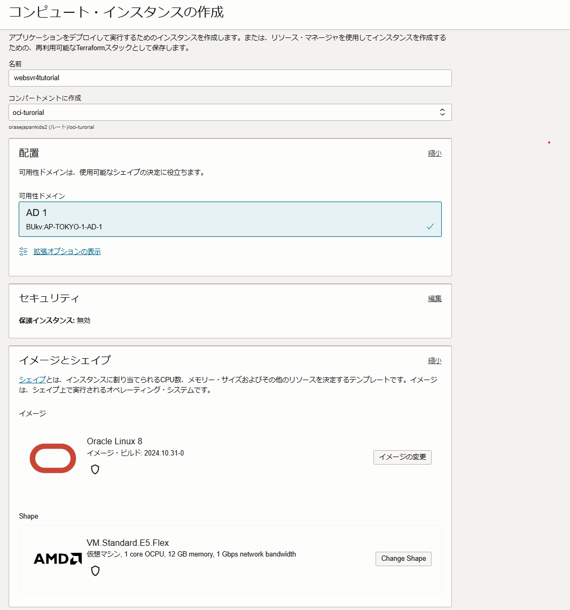 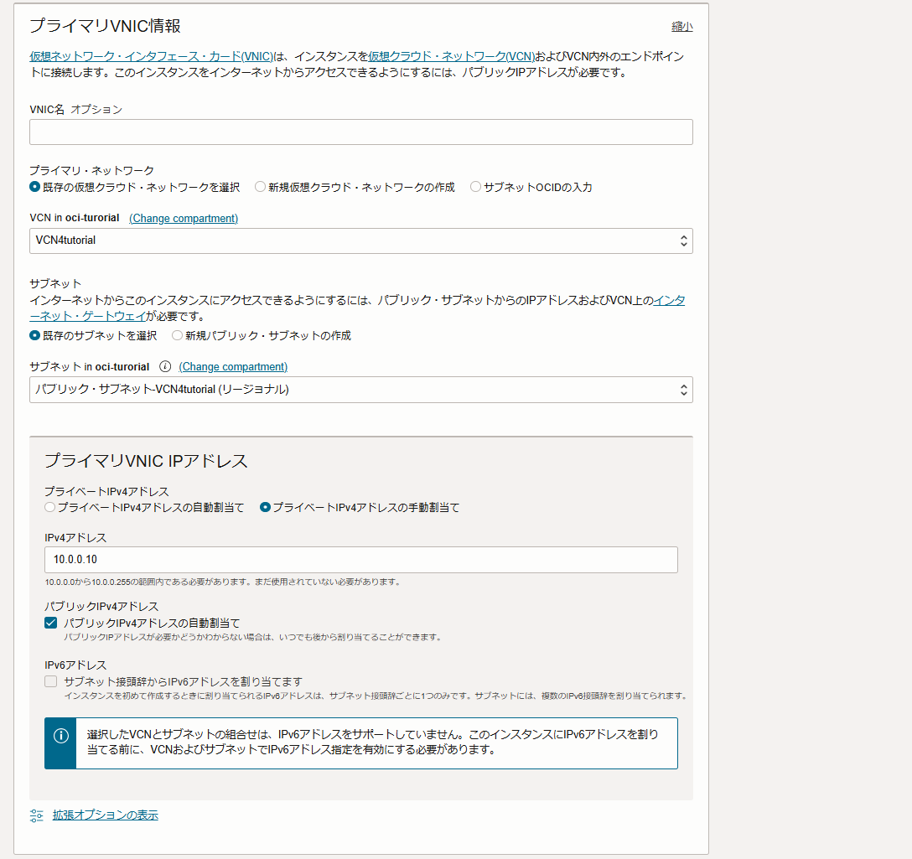 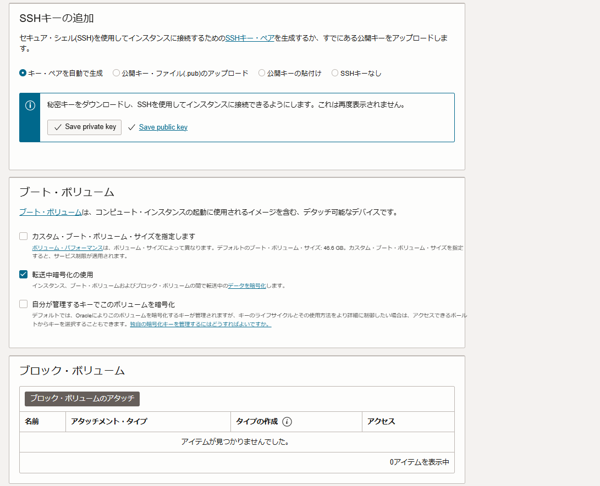 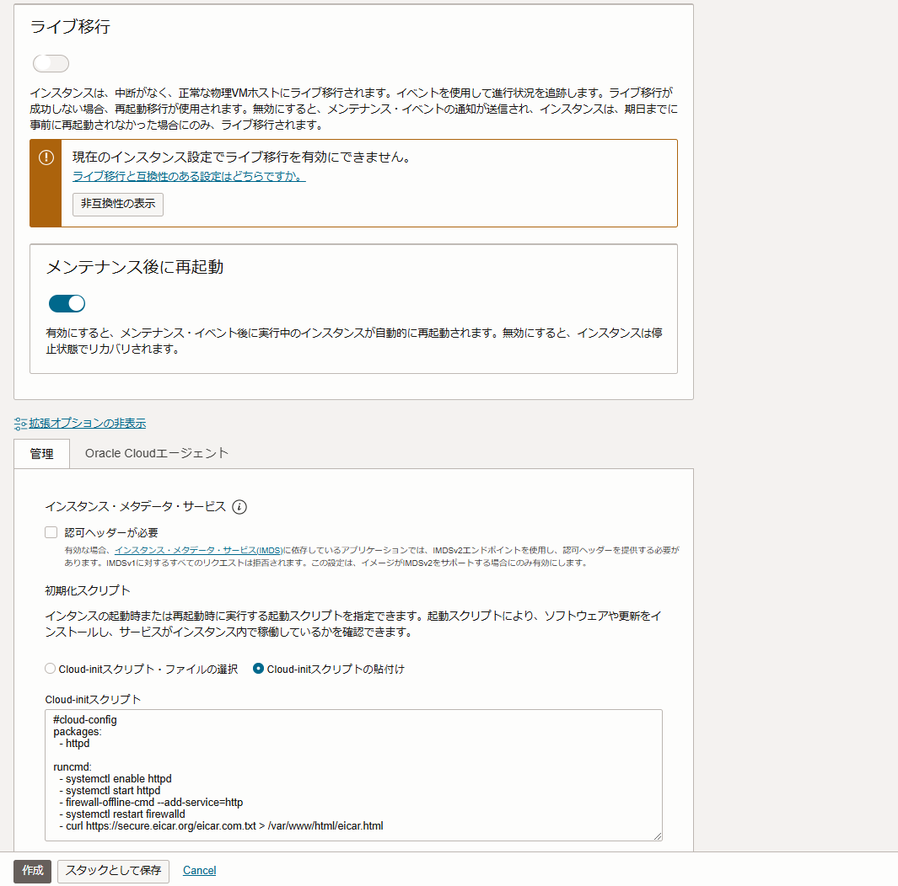
後に作成されたテスト用のWebページにアクセスしますので、割り当てられたパブリックIPアドレスを控えておきます。
初期化スクリプトの実行に数分かかりますので、その間にWebページにアクセスできるように次の手順にて通信の許可設定を行います。
3-2. HTTPアクセスのためのセキュリティ・リストの編集
OCIコンソール画面にアクセスし、左上のメニューボタンより、[ネットワーキング] → [仮想クラウド・ネットワーク] → [VCN4tutorial] と移動します。
VCN詳細画面の「セキュリティ・リスト」セクションから [Default Security List for VCN4tutorial] を選択し、[イングレス・ルールの追加] ボタンより以下のイングレス・ルールを追加します。
ソース・タイプ- CIDRソースCIDR- 0.0.0.0/0IPプロトコル- TCP宛先ポート範囲- 80説明- (任意) HTTP通信を許可
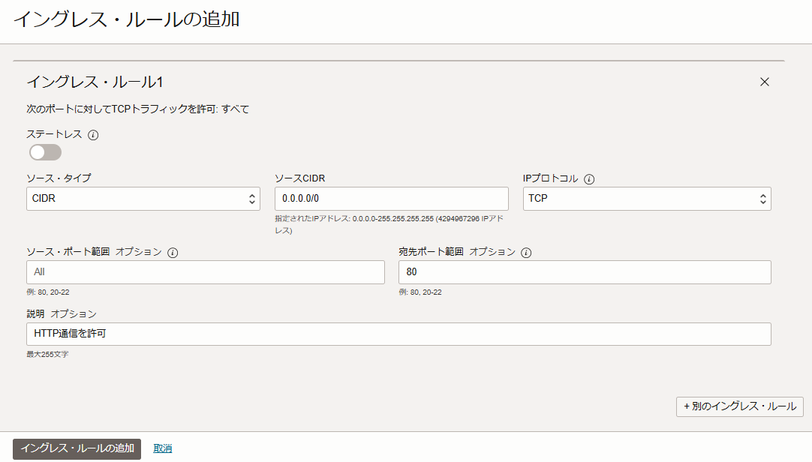
3-3. Webページへのアクセスを確認
ブラウザで以下のURLにアクセスし、テストページが正しく表示されることを確認します。
http://<コンピュートのパブリックIP>/
アクセスできない場合、初期化スクリプトの実行がまだ完了していない可能性があります。数分待ってから再試行してください。（参考：筆者の環境では約2分半で完了しました）
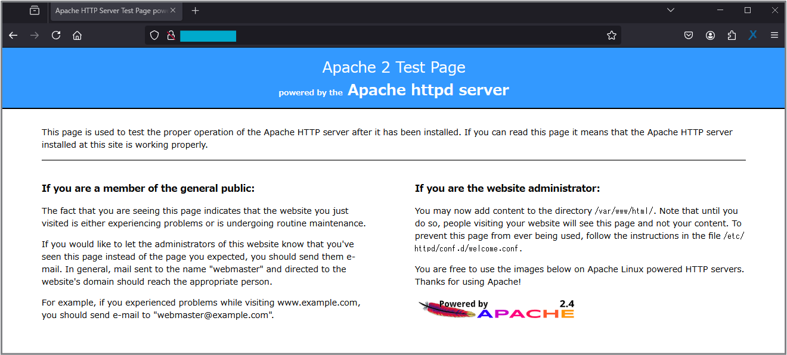
次に以下のURLにアクセスし、eicarファイルが正しく表示されることを確認します。
http://<コンピュートのパブリックIP>/eicar.html
eicarファイルはウイルス対策ソフトの応答をテストするためのテキストファイルです。
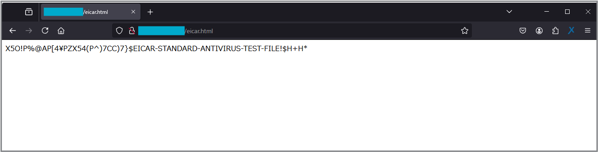
4. Firewallを経由するためのルーティング設定
Network FirewallインスタンスのプライベートIPアドレスを元に、通信がFirewallインスタンスを経由するようにルーティングの設定を行います。
4-1. Internet Gatewayのルート表の編集
OCIコンソール画面にアクセスし、左上の [メニューボタン] → [ネットワーキング] → [仮想クラウド・ネットワーク] → [VCN4tutorial] と移動します。
作成したVCN詳細画面の「ルート表」セクションより[ルート表の作成] ボタンをクリックします。
ルート表作成画面にて以下項目を入力し、[作成] をクリックします。
名前- Route Table for IGWコンパートメント- <任意のコンパートメントを選択>[＋別のルート・ルール]を選択ターゲット・タイプ- プライベートIPサブネットまたはVLANコンパートメント- <サブネットが所属するコンパートメントを選択>宛先CIDRタイプ- CIDRブロック宛先CIDRブロック- 10.0.0.0/16ターゲット選択- 10.0.2.100（Network FirewallインスタンスのプライベートIPアドレス）
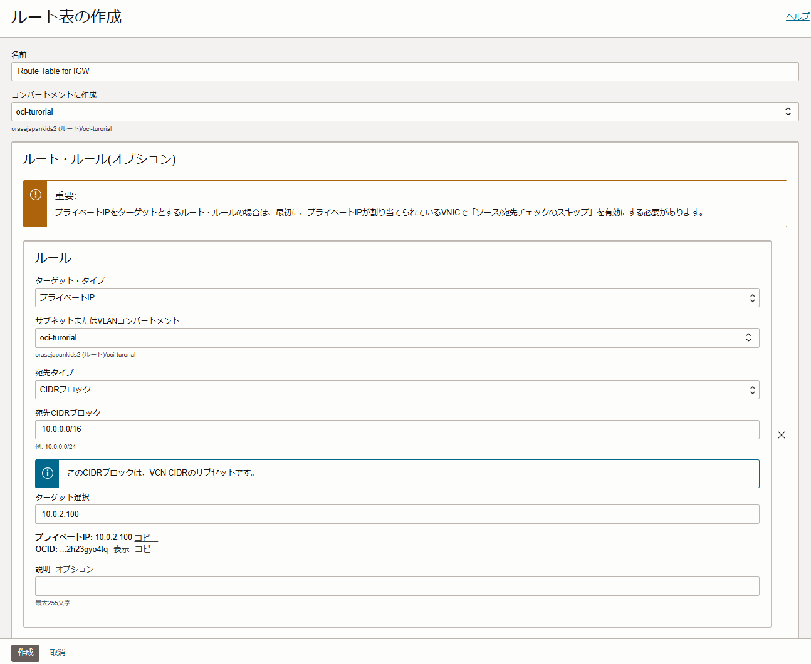
作成したルート表をインターネット・ゲートウェイに関連付けます。
VCN詳細画面の「インターネット・ゲートウェイ」セクションを選択し、作成されているインターネット・ゲートウェイのケバブメニューから[ルート表の関連付け] をクリックします。
ルート表[Route Table for IGW] を選択し、[ルート表の関連付け] をクリックします。

4-2. パブリック・サブネットのルート表の編集
パブリック・サブネット内からの通信がNetwork Firewallインスタンスを経由するようにルート表を編集します。
作成したVCN詳細画面の「ルート表」セクションより[default route table for VCN4tutorial] を選択し、既存のルート・ルールを編集し以下の新しいルート・ルールに変更します。
ターゲット・タイプ- プライベートIPサブネットまたはVLANコンパートメント- <サブネットが所属するコンパートメントを選択>宛先CIDRタイプ- CIDRブロック宛先CIDRブロック- 0.0.0.0/0ターゲット選択- 10.0.2.100（Network FirewallインスタンスのプライベートIPアドレス）

ここまでの設定により、現時点での環境は以下のようになっています。

5. Network FirewallのIDP機能を確認する
5-1. テストサイトにアクセスする
Firewallインスタンスの作成が完了した後、webサーバーに配置したeicarファイルへのアクセスがFirewallによって防止されるかを確認します。
この手順で、IDP（侵入防止機能）が正しく動作していることを検証します。
手順3-3と同様、ブラウザで以下の2つのURLにアクセスします。
以下のURLでアクセスし、正しくテストページが表示されることを確認します。
http://<コンピュートのパブリックIP>/

次に以下のURLにアクセスするとeicarファイルがFirewallによって検知され、アクセスが拒否されることを確認します。
http://<コンピュートのパブリックIP>/eicar.html

5-2. ログを確認する
Firewallがeicarファイルへのアクセスを検知した場合、その記録をログとして確認できます。
ログを確認するためには、Network Firewallインスタンスの詳細画面の「ログ」セクションより検知した脅威のログ（Threat Log）を有効化します。

検知されたeicarファイルはこの脅威ログより、以下のように確認できます。

手順2-1で作成したネットワーク・ファイアウォール・ポリシーでは、IDS/IPS、URLフィルタリング、SSLインスペクションなどの機能を設定できます。 さらにFirewallの動作を検証するステップとして、サービスリストやURLリストの動作検証を行うチュートリアル「OCI Network Firewallの動作検証を行う」もご用意しています。ぜひお試しください。